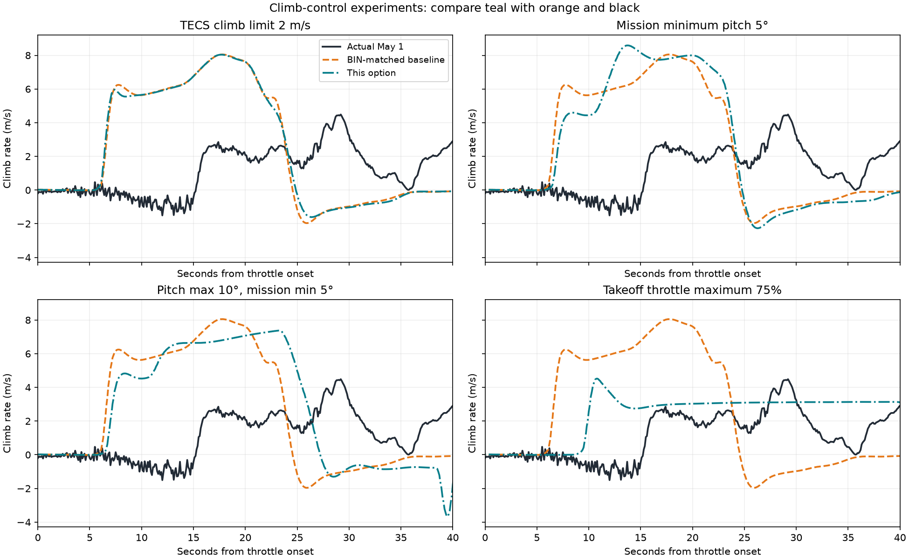
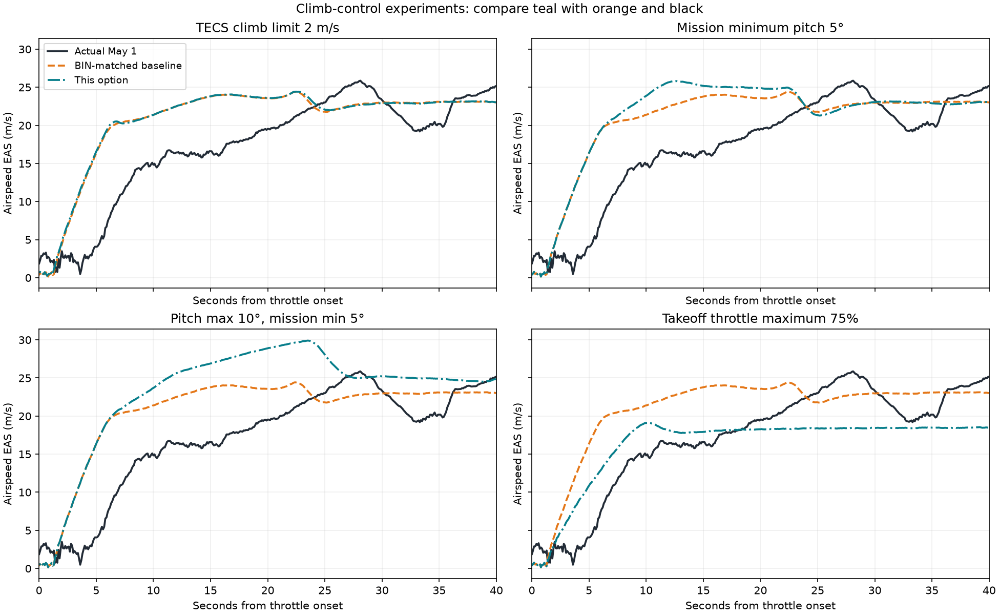
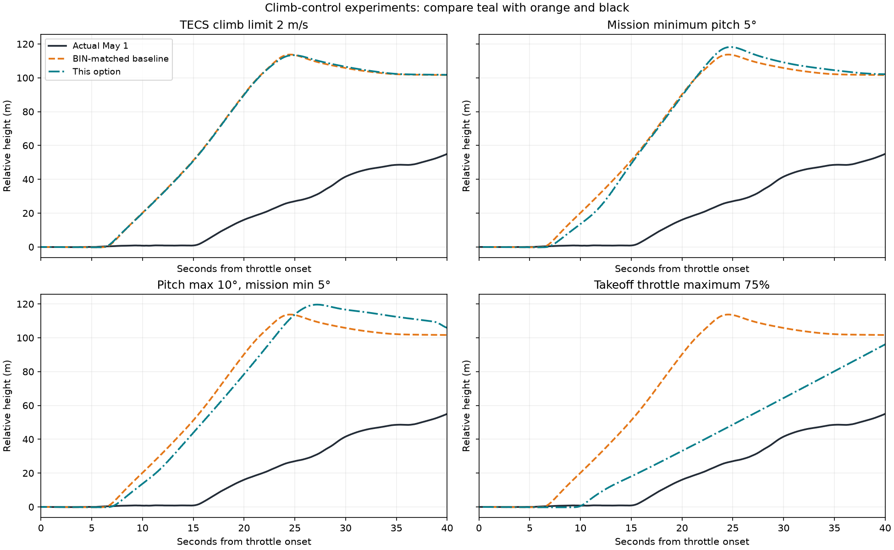

Cruise and takeoff report · Pitch and parameter investigation
The tested 75% takeoff throttle limit is now the default for tig_da35_cruise. See the full-mission and straight-cruise verification. The baseline in these experiments is the earlier BIN-matched configuration before that model override. The actual flight used different commands and configuration, so matching climb with less commanded throttle would not validate the engine model.
| Option | Peak climb, 0–30 s (m/s) | Mean takeoff climb at 10–80 m (m/s) | Peak pitch, 0–30 s (deg) | Max EAS, 0–60 s (m/s) | Min EAS above 10 m (m/s) | Seconds to +50 m |
|---|---|---|---|---|---|---|
| Actual May 1 | 4.49 | 2.09 | 17.99 | 25.87 | 18.09 | 37.50 |
| BIN-matched baseline | 8.05 | 6.58 | 22.55 | 24.49 | 20.72 | 14.90 |
| TECS climb limit 2 m/s | 8.04 | 6.54 | 23.11 | 24.50 | 20.53 | 14.90 |
| Mission minimum pitch 5° | 8.59 | 7.12 | 21.30 | 25.81 | 21.28 | 15.20 |
| Pitch max 10°, mission min 5° | 7.38 | 6.24 | 16.63 | 29.91 | 22.41 | 16.00 |
| Takeoff throttle maximum 75% | 4.52 | 3.05 | 21.52 | 24.97 | 17.78 | 25.50 |
Peak climb and pitch use the first 30 seconds from sustained throttle onset. Mean climb uses only takeoff-stage samples at 10–80 m above each pre-takeoff reference. These windows differ in time and duration between flights. Airspeed extrema use the displayed first 60 seconds, with the minimum restricted to height above 10 m. The actual data are the first May 1 takeoff; each simulation is a separate mission, not a replay.

TKOFF_THR_MAX=75 in a separate simulation profile. It caps the commanded throttle during takeoff; 75% command is not 75% shaft power. This tested setting approaches the recorded climb rate, but changes the inputs from the actual flight and increases time to +50 m. Cruise settings are unchanged.TECS_PITCH_MAX=10 limits the navigation pitch request, with the existing +4° pitch trim still applied downstream. Pitch improves, but excess power produces more airspeed: almost 30 m/s in this test. This is not an effective standalone way to match climb.TECS_CLMB_MAX=2 does not impose a 2 m/s takeoff cap in this pinned ArduPlane 4.5.6 run. Takeoff pitch prioritizes airspeed, and the takeoff logic imposes a minimum pitch. Its role in ordinary altitude tracking differs from takeoff. Changing TKOFF_LVL_PITCH would target TAKEOFF mode rather than the AUTO mission command used here.ArduPilot's automatic takeoff documentation describes the takeoff pitch and throttle controls. The tested behavior above is checked against the pinned 4.5.6 source: takeoff pitch selection and TECS takeoff speed weighting and limits. Newer documentation includes controls unavailable in this pinned version.


The shared settings in config/sitl.parm remain matched to the BIN snapshot. config/models/tig_da35_cruise.parm adds the approved 75% takeoff limit for this model. No engine or aerodynamic coefficients were changed. The experiments do not establish broad fidelity or validate landing behavior, flap aerodynamics or electric assistance.
To repeat the tested throttle-limited simulation with its isolated parameter file:
python3 scripts/run_sitl.py --model tig_da35_cruise --name my_climb_test --param-file runtime/da35_climb_options/inputs/throttle_cap_75/sitl.parm --profile --duration 75
Recreate all four experiments: python3 scripts/investigate_da35_climb.py --run. Redraw saved results without flying again: python3 scripts/investigate_da35_climb.py.
Metrics · Experimental settings · Actual samples · Baseline samples · Throttle-limited samples